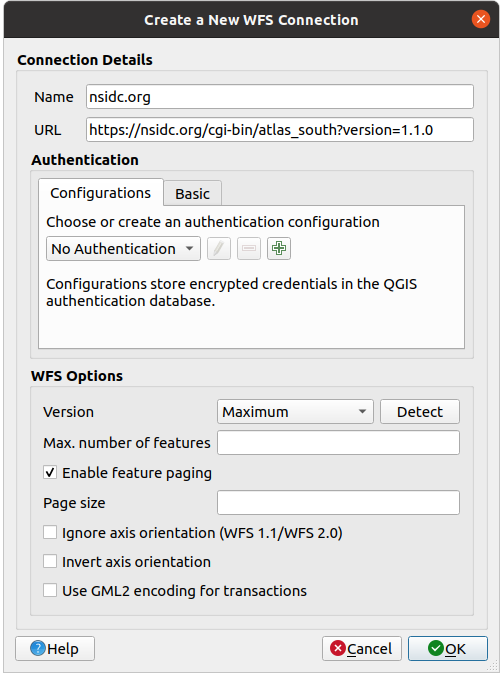
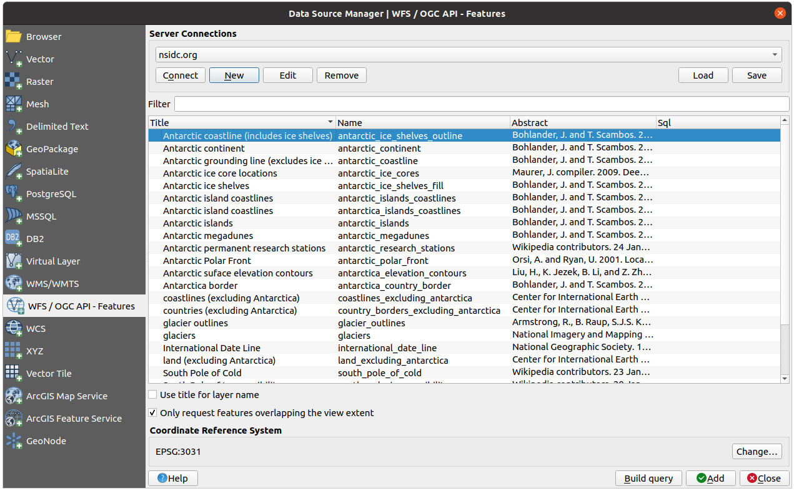
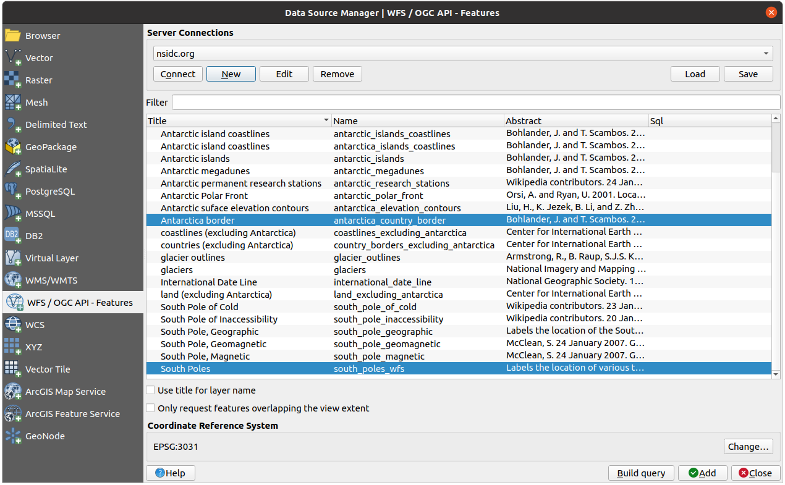
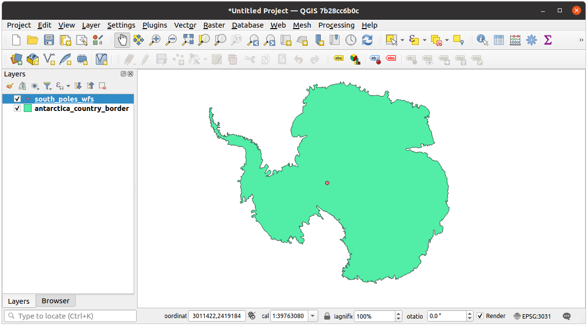
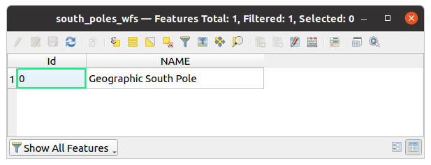
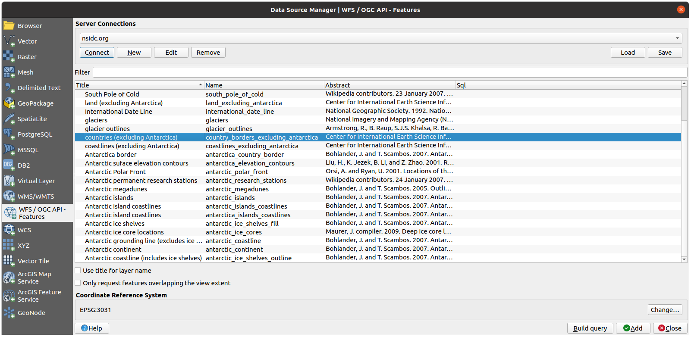
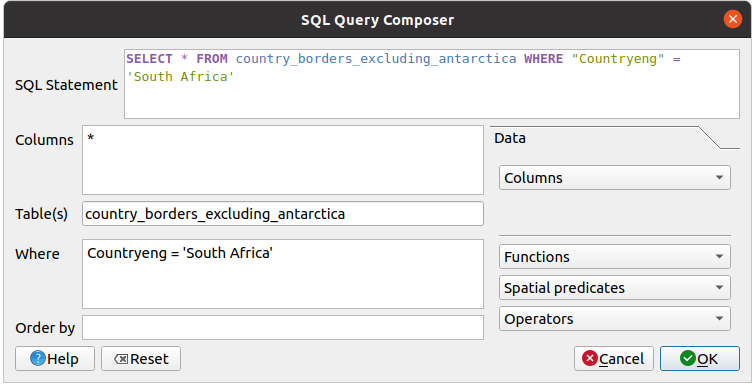
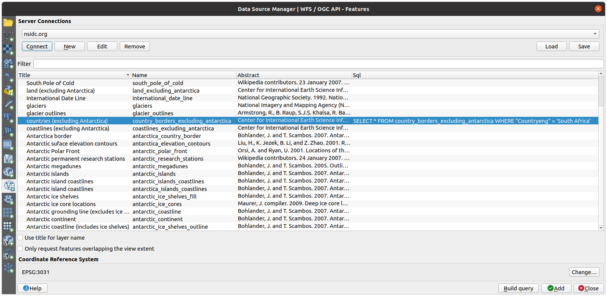
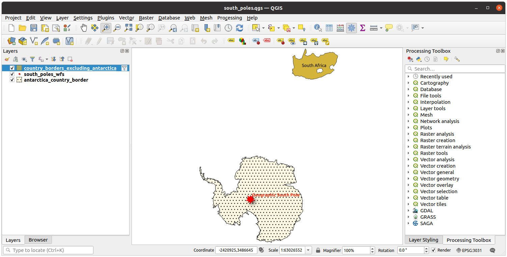

A Web Feature Service (WFS) provides its users with GIS data in formats that
can be loaded directly in QGIS. Unlike a WMS, which provides you only with a
map which you can’t edit, a WFS gives you access to the features themselves.
The goal for this lesson: To use a WFS and understand how it differs from a
WMS.
Start a new map. This is for demo purposes and won’t be saved.
Click the Open Data Source Manager button.
Enable the WFS / OGC API - Features tab.
Click the New button.
In the dialog that appears, enter the Name as nsidc.org
and the URL as
https://nsidc.org/cgi-bin/atlas_south?version=1.1.0.

Click OK, and the new connection will appear in your
Server connections.
Click the Connect. A list of the available layers will appear:

Uncheck the Only request features overlapping the view extent option
below the layers list, since your current map canvas may not cover our area of
interest: Antarctica.
Find the layer antarctica_country_border.
You can use the Filter box at the top.
Click on the layer to select it:
Find and select also the layer south_poles_wfs.
You might need to hold Ctrl.

Click Add.
It may take a while to load the layers. When they are loaded, they will appear in
the map, showing the outlines of Antarctica and a few points over.

How is this different from having a WMS layer?
Select any of the layers and you’ll notice that feature selection and
attribute table tools are enabled. These are vector layers.
Select the south_poles_wfs layer and open its attribute table.
You should see this:

Since the points have attributes, we are able to label them,
as well as change their symbology. Here’s an example:
A Web Feature Service returns the layer itself, not just a map rendered from
it. This gives you direct access to the data, meaning that you can change its
symbology and run analysis functions on it. However, this is at the cost of
much more data being transmitted. This will be especially obvious if the layers
you’re loading have complicated shapes, a lot of attributes, or many features;
or even if you’re just loading a lot of layers. WFS layers typically take a
very long time to load because of this.
Although it is of possible to query a WFS layer after having loaded
it, it’s often more efficient to query it before you load it. That way, you’re
only requesting the features you want, meaning that you use far less bandwidth.
For example, on the WFS server we’re currently using, there is a layer called
countries (excluding Antarctica). Let’s say that we want to know
where South Africa is relative to the south_poles_wfs layer (and
perhaps also the antarctica_country_border layer) that’s already
been loaded.
There are two ways to do this. You can load the whole countries …
layer, and then build a query as usual once it’s loaded. However, transmitting
the data for all the countries in the world and then only using the data for
South Africa seems a bit wasteful of bandwidth. Depending on your connection,
this dataset can take several minutes to load.
The alternative is to build the query as a filter before even loading the layer
from the server.
Enable the WFS / OGC API Features tab in the
Data Source Manager dialog
Connect to the server we used before and you should see the list of available layers.
Find and double-click the countries (excluding Antarctica) layer.
The layer name is country_borders_excluding_antarctica.
You can also select the layer and press Build query button at
the bottom of the dialog:

In the dialog that appears, type the following
SELECT*FROMcountry_borders_excluding_antarcticaWHERE"Countryeng"='SouthAfrica'
query in the SQL Statement box.

Press OK.
The expression used will appear as the Sql value of the target layer:

Click Add with the layer selected as above.
Only the country with the Countryeng value of SouthAfrica will load from
that layer:

Did you notice the icon next to the
country_borders_excluding_antarctica layer? It indicates that the loaded
layer is filtered and does not display in the project all of its features.
You don’t have to, but if you tried both methods, you’ll notice that this is a
lot faster than loading all the countries before filtering them!
It is rare to find a WFS hosting features you need, if your needs are very
specific. The reason why Web Feature Services are relatively rare is because of
the large amounts of data that must be transmitted to describe a whole feature.
It is therefore not very cost-effective to host a WFS rather than a WMS, which
sends only images.
The most common type of WFS you’ll encounter will therefore probably be on a
local network or even on your own computer, rather than on the Internet.
WFS layers are preferable over WMS layers if you need direct access to the
attributes and geometries of the layers. However, considering the amount of
data that needs to be downloaded (which leads to speed problems and also a lack
of easily available public WFS servers) it’s not always possible to use a WFS
instead of a WMS.
 Follow Along: Loading a WFS Layer
Follow Along: Loading a WFS Layer Open Data Source Manager button.
Open Data Source Manager button. WFS / OGC API - Features tab.
WFS / OGC API - Features tab. Follow Along: Querying a WFS Layer
Follow Along: Querying a WFS Layer icon next to the
icon next to the